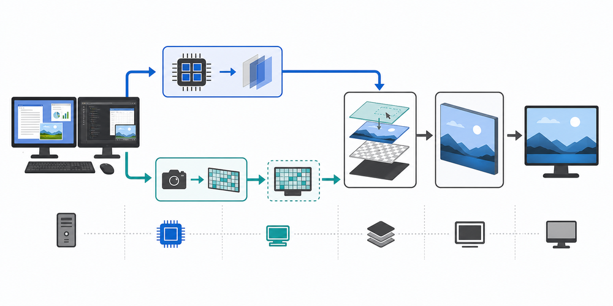
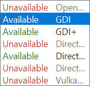
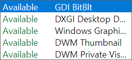
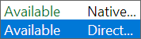
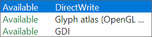

Capture API and Graphics API are independent selections. Capture obtains the desktop image or compositor visual; graphics composes pixel-backed content and MAG's overlay. The status box rejects combinations that cannot be routed correctly.
A compositor-visual capture can bypass the pixel renderer, while GDI, DXGI Desktop Duplication, and Windows Graphics Capture produce frames that the selected graphics backend consumes. UI and text remain separately selectable.

MAG can route a compositor visual directly or process captured pixels through rendering. Both routes add MAG's overlay before the selected composition host and presentation surface reach the display.
|
 Graphics API: OpenGL, GDI, GDI+, Direct3D 9, Direct3D 11, Direct3D 12, and Vulkan. |
 Capture API: GDI BitBlt, DXGI Desktop Duplication, Windows Graphics Capture, DWM Thumbnail, and DWM Private Visual. |
|
 UI API: Native draw list or Direct2D. |
 Text renderer: DirectWrite, Glyph atlas (OpenGL GPU/CPU), or GDI. |
| API | Behavior and limits |
|---|---|
| GDI BitBlt | CPU-owned baseline desktop capture. It is broadly compatible but is not a strict zero-copy route. |
| DXGI Desktop Duplication | Duplicates attached DXGI outputs and combines monitor regions for the requested desktop area. Availability depends on the active output, adapter, driver, session, and desktop state. |
| Windows Graphics Capture | Uses the Windows capture runtime for monitor capture. Availability depends on the installed Windows capture APIs and an adapter-compatible D3D device. |
| DWM Thumbnail | Uses a DWM-owned thumbnail relationship. It is a compositor route rather than a CPU screen readback, but its source and host restrictions differ from pixel capture. |
| DWM Private Visual | Shares the composed desktop visual into MAG's DirectComposition tree and supplements it with positioned desktop, taskbar, and visible application source visuals. MAG applies its own wrapper transform and clip without recreating the shared source. |
See Windows Graphics Architecture for the retained DWM Private Visual tree and the complete driver/compositor stack.
| API | Role |
|---|---|
| OpenGL | WGL/OpenGL renderer with swap-interval pacing when the driver exposes it. |
| GDI | Windows GDI renderer and CPU presentation baseline. It can also bridge GDI content to supported composition presenters. |
| GDI+ | Pure-C flat-ABI GDI+ renderer with retained source/target bitmaps, graphics context, and brush. Redirected HWND routes finish with one BitBlt; Presentation Manager routes upload the completed CPU surface through the selected adapter. It is CPU-classified and cannot satisfy strict zero-copy. |
| Direct3D 9 | Direct3D 9 renderer with selectable presentation intervals and supported D3D9 presentation targets. |
| Direct3D 11 | DXGI flip-model renderer and the primary Windows interop path for Direct2D, capture, DirectComposition, and Presentation Manager. |
| Direct3D 12 | Explicit Direct3D 12 renderer with DXGI presentation and waitable pacing. |
| Vulkan | Vulkan renderer using the available Win32 surface, swapchain, and present modes. |
| Choice | Behavior |
|---|---|
| Native draw list | MAG generates one neutral overlay command list and lets the active graphics backend draw it. |
| Direct2D | Uses Direct2D for overlay rendering on routes with a compatible target. |
| Choice | Behavior |
|---|---|
| DirectWrite | DirectWrite text layout and rasterization. |
| Glyph atlas (OpenGL GPU / CPU) | Cached glyph-atlas text, using the OpenGL GPU path where active and its CPU implementation elsewhere. |
| GDI | GDI text rasterization for legacy/CPU-oriented routes. |
The architecture topic contains individual diagrams for Direct3D 9, Direct3D 11, Direct3D 12, Direct2D, DirectWrite, OpenGL, Vulkan, GDI, GDI+, DXGI, DirectComposition, DWM Private Visual, and WDDM graphics drivers.